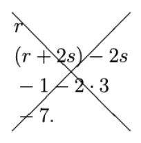

1. Proofs by calculation
This book begins in the familiar world of numbers: \(\mathbb{N}\), the natural numbers (which in this book include 0); \(\mathbb{Z}\), the integers; \(\mathbb{Q}\), the rational numbers; and \(\mathbb{R}\), the real numbers. We solve problems which feel pretty close to high school algebra – deducing equalities/inequalities from other equalities/inequalities – using a technique which is not usually taught in high school algebra: building a single chain of expressions connecting the left-hand side with the right.
1.1. Proving equalities
1.1.1. Example
We start with proofs of equalities. Here is a typical example of the technique mentioned.
Problem
Let \(a\) and \(b\) be rational numbers and suppose that \(a - b = 4\) and \(ab=1\). Show that \((a+b)^2=20\).
Solution
We call the above proof a proof by calculation. The goal was to show that \((a+b)^2=20\), and we established this by writing down a chain of equalities, which starts with the expression \((a+b)^2\) (top left) and ends with \(20\) (bottom right). The proof, implicitly, has three steps:
1. \(\underline{\text{Proof that }(a+b)^2=(a-b)^2+4ab}\): this is a purely algebraic rearrangement – after expanding out and simplifying, both sides are the same quantity, \(a^2+2ab+b^2\).
2. \(\underline{\text{Proof that }(a-b)^2+4ab=4^2+4\cdot 1}\): this is a pure substitution step, using the known facts that \(a-b=4\) and \(ab=1\).
3. \(\underline{\text{Proof that }4^2+4\cdot 1=20}\): this is another purely algebraic step.
This is the most common style of presenting an equality proof in advanced mathematics textbooks and in research mathematics. There is a trade-off: it usually takes more work for you, the writer, of the proof, to organize a proof in this style, but the resulting proof is short and easy to check, which is courteous to your readers.
In Section 1.3 we will discuss the question of how to come up with a proof in this style. For now, let’s focus on how to understand them.
1.1.2. Example
Problem
Let \(r\) and \(s\) be real numbers, and suppose that \(r + 2 s = -1\) and \(s = 3\). Prove that \(r = -7\).
Solution
This proof implicitly has four steps, which successively transform the left-hand side, \(r\), to the right-hand side, \(-7\):
1. \(\underline{\text{Proof that }r=(r+2s)-2s}\): a purely algebraic rearrangement.
2. \(\underline{\text{Proof that }(r+2s)-2s=-1 - 2s}\): this is a pure substitution step, using the known fact that \(r + 2 s = -1\).
2. \(\underline{\text{Proof that }-1-2s=-1 - 2 \cdot 3}\): this is a pure substitution step, using the known fact that \(s = 3\).
4. \(\underline{\text{Proof that }-1 - 2 \cdot 3=-7}\): this is another purely algebraic step.
You might wonder what flexibility there is in presenting a proof in this style. It is common to put each expression of the proof on its own line, so that the first expression isn’t all alone on the left. This is certainly acceptable, and is useful if the expressions involved are very long, so the extra space is needed.
Solution
Sometimes students are tempted to omit the equals signs, or to put the equals signs at the right. This is very unconventional; don’t do this!
{kind=link}

Finally, notice that the calculations end with a period. The whole calculation is considered to be a single sentence, and the period ends it.
1.1.3. Example
The next example again follows a pattern of algebra, substitution, algebra. Check each step in your head.
Problem
Let \(a\), \(b\), \(m\) and \(n\) be integers, and suppose that \(b^2=2a^2\) and \(am+bn=1\). Show that \((2an+bm)^2=2\).
Solution
In this case, the algebra required in the first step,
is very extensive. (This fact is known as Brahmagupta’s identity, named for the Indian mathematician who discovered it in c. 628 CE.) You might optionally choose to help your reader by providing several intermediate steps, each one of which can be checked by a simpler algebraic calculation.
Solution
1.1.4. Example
Here is one more example. Again, check each step in your head. Notice that you might be tempted to start on this problem by “solving for” \(a\) and \(f\), with \(a=bc/d\) and \(f = de/c\). But this actually would make the solution more complicated, by introducing unnecessary case splits depending on whether or not \(d=0\) and \(c=0\). The proof by direct calculation avoids these case splits.
Problem
Let \(a\), \(b\), \(c\), \(d\), \(e\) and \(f\) be integers, and suppose that \(ad = bc\) and \(cf=de\). Show that \(d(af - be) = 0\).
Solution
1.2. Proving equalities in Lean
In this book, we will learn to write every proof in two ways: in words, as humans have done for thousands of years, and in a computer system called a proof assistant, an approach which was first experimented with in the 1960s and is still quite unusual. We will be using the proof assistant Lean 4, developed since 2014 at Microsoft Research and elsewhere by a team led by Leonardo de Moura, and its standard mathematical library Mathlib.
In this and all following sections of the book, there is an associated Lean file, which you should have open to experiment with at the same time as you are reading. Head over now to the GitHub repository, https://github.com/hrmacbeth/math2001, to get instructions for downloading this code to your own computer or opening it in the cloud on Gitpod. The Gitpod option is recommended for beginners – just make an account and you will be ready to start work, no Lean installation necessary.
Lean code is designed to be written in an interactive development environment (IDE) so that you get live feedback as you work. In this book I assume that you are running the IDE Visual Studio Code – this will open automatically when you start Gitpod.
To get started, navigate in Visual Studio Code to the file which corresponds to this section,
Math2001/01_Proofs_by_Calculation/02_Proving_Equalities_in_Lean. When you open this file, you may
see a second panel pop up called the “Lean Infoview”. You can ignore this for now, or even close
it. We will start using the Lean Infoview in Chapter 2.
1.2.1. Example
The first two important lines in the file look like this:
example {a b : ℚ} (h1 : a - b = 4) (h2 : a * b = 1) : (a + b) ^ 2 = 20 :=
This is a Lean representation of Example 1.1.1:
Problem
Let \(a\) and \(b\) be rational numbers and suppose that \(a - b = 4\) and \(ab=1\). Show that \((a+b)^2=20\).
The code {a b : ℚ} sets up two variables a and b whose type is ℚ, which is the
standard mathematical notation for the rational numbers (mnemonic: “quotients”).
The code (h1 : a - b = 4) (h2 : a * b = 1) sets up two hypotheses, for the two facts given
to us in the problem statement, \(a - b = 4\) and \(ab=1\). Hypotheses in Lean have names,
here h1 and h2, so that we can refer back to them later. Notice that multiplication must
be written explicitly, using the symbol *, whereas on paper multiplication is inferred by
writing two variables next to each other like \(ab\).
After the colon, :, comes the goal, the statement we have been asked to prove:
(a + b) ^ 2 = 20, i.e. \((a+b)^2=20\). The symbol ^ is used in Lean for raising to a
power.
Lean’s key feature is that it checks your proofs as you write them, giving you instant feedback about whether they are correct. The solution to this problem, as we wrote it in the previous section, was a single calculation:
This can be expressed in Lean as a “calculation block” using the keyword calc. The steps of
the calculation are typed out, similarly to how they were written on paper. At the end of each
line comes a justification for why the deduction in that line is valid. We discussed in the
previous section why each of the three deductions was valid:
1. \(\underline{\text{Proof that }(a+b)^2=(a-b)^2+4ab}\): algebraic rearrangement
2. \(\underline{\text{Proof that }(a-b)^2+4ab=4^2+4\cdot 1}\): substitution, using the known facts that \(a-b=4\) and \(ab=1\).
3. \(\underline{\text{Proof that }4^2+4\cdot 1=20}\): algebraic rearrangement
In Lean, an algebraic rearrangement is indicated by the tactic ring, and a substitution by the
tactic rw (stands for “rewrite”). When making a substitution, you must indicate by name the
hypotheses which you are substituting.
example {a b : ℚ} (h1 : a - b = 4) (h2 : a * b = 1) : (a + b) ^ 2 = 20 :=
calc
(a + b) ^ 2 = (a - b) ^ 2 + 4 * (a * b) := by ring
_ = 4 ^ 2 + 4 * 1 := by rw [h1, h2]
_ = 20 := by ring
1.2.2. Example
Here is a Lean representation of Example 1.1.2, and its proof, which on paper looked like this:
In each of the four places marked with Lean’s standard placeholder sorry, 1 fill in the appropriate Lean
justification (either ring or rw with some hypotheses).
example {r s : ℝ} (h1 : s = 3) (h2 : r + 2 * s = -1) : r = -7 :=
calc
r = r + 2 * s - 2 * s := by sorry
_ = -1 - 2 * s := by sorry
_ = -1 - 2 * 3 := by sorry
_ = -7 := by sorry
While filling in the justifications here, you probably discovered what happens in Lean when you make a mistake: a red underline appears somewhere. For example, all of the following will cause a red underline to appear somewhere. Try them!
misspellings, like
rininstead ofringpunctuation errors, like
rw [h2instead ofrw [h2]erroneous tactic for the justification, like putting
ringwhere the justification should have been arwerroneous information provided to the tactic for the justification, like putting
rw [h2]when in fact what’s being substituted ish1erroneous mathematics in the calculation, like
1 - 2 * sinstead of-1 - 2 * s
If there are no red underlines anywhere then your proof is correct. Sometimes the red underlines are very small, so look closely. You can double check by consulting the horizontal blue status line at the bottom of the screen in VS Code. Next to the symbol “⊗” is a number indicating how many mistakes are in the file, and if there are no mistakes, there will also be a check mark.
1.2.3. Example
Here is a Lean representation of Example 1.1.3, and its proof, which on paper looked like this:
As before, in each of the three places marked with the placeholder sorry, fill in the
appropriate Lean justification.
example {a b m n : ℤ} (h1 : a * m + b * n = 1) (h2 : b ^ 2 = 2 * a ^ 2) :
(2 * a * n + b * m) ^ 2 = 2 :=
calc
(2 * a * n + b * m) ^ 2
= 2 * (a * m + b * n) ^ 2 + (m ^ 2 - 2 * n ^ 2) * (b ^ 2 - 2 * a ^ 2) := by sorry
_ = 2 * 1 ^ 2 + (m ^ 2 - 2 * n ^ 2) * (2 * a ^ 2 - 2 * a ^ 2) := by sorry
_ = 2 := by sorry
1.2.4. Example
Finally, here is a Lean representation of Example 1.1.4. On paper its proof looked like this:
Type out the whole proof in Lean and fill out the justification of each step. Be warned that Lean
is very sensitive about order of operations. For example, (x * y) * z, x * (y * z), and
(y * x) * z all mean different things in Lean. 2 So look closely at each step in the paper proof
and make sure, when you are rewriting, that the parentheses exactly surround the small part of the
expression in which you want to make the substitution.
example {a b c d e f : ℤ} (h1 : a * d = b * c) (h2 : c * f = d * e) :
d * (a * f - b * e) = 0 :=
sorry
1.2.5. Exercises
The next section, Section 1.3, contains many examples of calculational proofs. Without yet reading the
mathematics of the section closely, type up in Lean some of the examples from that section,
following the paper proofs given. The Lean file for the next section is
Math2001/01_Proofs_by_Calculation/03_Tips_and_Tricks.
Footnotes
1.3. Tips and tricks
1.3.1. Example
In this section we will cover some tips and tricks for actually coming up with a proof by calculation.
Problem
Let \(a\) and \(b\) be integers and suppose that \(a = 2b + 5\) and \(b = 3\). Show that \(a = 11\).
Since the goal in this problem is to show that \(a=11\), we already know that the solution will look something like this:
Casting around for ideas, we see that one of the hypotheses, \(a = 2b + 5\), has \(a\) on the left-hand side. So we put that as the first step of the calculation, and the rest of the steps write themselves.
Solution
example {a b : ℤ} (h1 : a = 2 * b + 5) (h2 : b = 3) : a = 11 :=
sorry
1.3.2. Example
More commonly, none of the hypotheses have a left- or right-hand side which exactly appears in the goal. Here is an example.
Problem
Let \(x\) be an integer and suppose that \(x+4=2\). Show that \(x=-2\).
Since the goal in this problem is to show that \(x=-2\), we already know that the solution will look something like this:
Our only hypothesis has an \(x+4\) on the left-hand side, so we create an \(x+4\) in our goal by adding and subtracting \(4\) from \(x\), like this: \(x=(x+4)-4\). Then the rest of the proof works out easily.
Solution
example {x : ℤ} (h1 : x + 4 = 2) : x = -2 :=
sorry
1.3.3. Example
Sometimes we need to perform this process, of “creating” one side of a hypothesis inside the goal, more than once.
Problem
Let \(a\) and \(b\) be real numbers and suppose that \(a-5b=4\) and \(b+2=3\). Show that \(a=9\).
In the first step of the solution we “create” an \(a-5b\); later in the third step we “create” a \(b+2\).
Solution
example {a b : ℝ} (h1 : a - 5 * b = 4) (h2 : b + 2 = 3) : a = 9 :=
sorry
1.3.4. Example
We might need to use both addition/subtraction and multiplication/division to “create” one side of the hypothesis.
Problem
Let \(w\) be a rational number and suppose that \(3w+1=4\). Show that \(w=1\).
Solution
example {w : ℚ} (h1 : 3 * w + 1 = 4) : w = 1 :=
sorry
1.3.5. Example
This technique also works for the classic, Algebra I-style equations. Consider the following problem:
Problem
Let \(x\) be an integer and suppose that \(2x + 3 = x\). Show that \(x=-3\).
You might have been taught to solve this kind of equation by subtracting and rearranging, something like this:
But the solution can also be presented as a proof by calculation, by “creating” a \(2x+3\).
Solution
example {x : ℤ} (h1 : 2 * x + 3 = x) : x = -3 :=
sorry
1.3.6. Example
Likewise, you have probably seen before systems of simultaneous equations like the following:
Problem
Let \(x\) and \(y\) be integers and suppose that \(2x-y=4\) and \(y-x+1=2\). Prove that \(x=5\).
You might have been taught to solve systems like these by adding or subtracting equations to eliminate the variable not of interest, then solving the remaining one-variable equation.
But this argument can also be presented as a proof by calculation, which has the advantage that there is no magic “add (1) and (2)” line requiring an annotation for the reader to follow.
Solution
example {x y : ℤ} (h1 : 2 * x - y = 4) (h2 : y - x + 1 = 2) : x = 5 :=
sorry
1.3.7. Example
Here is another example of a system of simultaneous equations solved by forming a clever combination of the hypotheses.
Problem
Let \(u\) and \(v\) be rational numbers, and suppose that \(u+2v=4\) and \(u-2v=6\). Show that \(u=5\).
Solution
example {u v : ℚ} (h1 : u + 2 * v = 4) (h2 : u - 2 * v = 6) : u = 5 :=
sorry
1.3.8. Example
And another – in this case we have to combine the tricks of the last two examples, taking varying multiples of the hypotheses to cancel the \(y\) and then dividing through by the multiple of \(x\) that is left.
Problem
Let \(x\) and \(y\) be real numbers, and suppose that \(x + y = 4\) and \(5x-3y=4\). Show that \(x=2\).
Solution
example {x y : ℝ} (h1 : x + y = 4) (h2 : 5 * x - 3 * y = 4) : x = 2 :=
sorry
1.3.9. Example
Finally, let’s do a few examples involving equations of degree greater than one.
Problem
Let \(a\) and \(b\) be rational numbers and suppose that \(a-3=2b\). Show that \(a ^ 2 - a + 3 = 4 b ^ 2 + 10 b + 9\).
Solution
The proof above has a few more steps than necessary, to explain how you might come up with this proof: first you deal with the \(a^2\) term by introducing an \((a-3)^2\) and adding/subtracting off the extra terms; then simplify; then deal with the \(a\) term; then simplify; then substitute and simplify again. It could be shortened to a proof in which successive purely-algebra steps are combined, leaving something as short as possible: one step consisting of a big algebraic calculation, one substitution step, then one more algebra step.
Solution
example {a b : ℚ} (h1 : a - 3 = 2 * b) : a ^ 2 - a + 3 = 4 * b ^ 2 + 10 * b + 9 :=
sorry
1.3.10. Example
Here’s another example with terms of degree greater than one.
Problem
Let \(z\) be a real number and suppose that \(z^2-2=0\). Show that \(z ^ 4 - z ^ 3 - z ^ 2 + 2 z + 1=3\).
Solution
That seems almost too slick, right? In my scratch work, I came up with this solution using the method of polynomial long division, which you may have been taught before: when \(z ^ 4 - z ^ 3 - z ^ 2 + 2 z + 1\) is divided by \(z^2-2\) it gives a quotient of \(z ^ 2 - z + 1\) and remainder of \(3\). But in the proof, it doesn’t matter what method was used to discover the fact that
This is a purely algebraic identity which can be easily checked by expanding and simplifying, so you can state the result without writing out the method.
example {z : ℝ} (h1 : z ^ 2 - 2 = 0) : z ^ 4 - z ^ 3 - z ^ 2 + 2 * z + 1 = 3 :=
sorry
1.3.11. Exercises
Give proofs by calculation for each of the following problems.
Let \(x\) and \(y\) be real numbers and suppose that \(x = 3\) and \(y = 4x - 3\). Show that \(y = 9\).
example {x y : ℝ} (h1 : x = 3) (h2 : y = 4 * x - 3) : y = 9 := sorry
Let \(a\) and \(b\) be integers and suppose that \(a-b=0\). Show that \(a=b\).
example {a b : ℤ} (h : a - b = 0) : a = b := sorry
Let \(x\) and \(y\) be integers and suppose that \(x-3y=5\) and \(y=3\). Show that \(x=14\).
example {x y : ℤ} (h1 : x - 3 * y = 5) (h2 : y = 3) : x = 14 := sorry
Let \(p\) and \(q\) be rational numbers and suppose that \(p-2q=1\) and \(q=-1\). Show that \(p=-1\).
example {p q : ℚ} (h1 : p - 2 * q = 1) (h2 : q = -1) : p = -1 := sorry
Let \(x\) and \(y\) be rational numbers and suppose that \(y+1=3\) and \(x+2y=3\). Show that \(x=-1\).
example {x y : ℚ} (h1 : y + 1 = 3) (h2 : x + 2 * y = 3) : x = -1 := sorry
Let \(p\) and \(q\) be integers and suppose that \(p+4q=1\) and \(q-1=2\). Show that \(p=-11\).
example {p q : ℤ} (h1 : p + 4 * q = 1) (h2 : q - 1 = 2) : p = -11 := sorry
Let \(a\), \(b\) and \(c\) be real numbers and suppose that \(a+2b+3c=7\), \(b+2c=3\) and \(c=1\). Show that \(a=2\).
example {a b c : ℝ} (h1 : a + 2 * b + 3 * c = 7) (h2 : b + 2 * c = 3) (h3 : c = 1) : a = 2 := sorry
Let \(u\) and \(v\) be rational numbers and suppose that \(4u+v=3\) and \(v=2\). Show that \(u=1/4\).
example {u v : ℚ} (h1 : 4 * u + v = 3) (h2 : v = 2) : u = 1 / 4 := sorry
Let \(c\) be a rational number and suppose that \(4 c + 1 = 3 c - 2\). Show that \(c = -3\).
example {c : ℚ} (h1 : 4 * c + 1 = 3 * c - 2) : c = -3 := sorry
Let \(p\) be a real number and suppose that \(5 p - 3 = 3 p + 1\). Show that \(p = 2\).
example {p : ℝ} (h1 : 5 * p - 3 = 3 * p + 1) : p = 2 := sorry
Let \(x\) and \(y\) be integers and suppose that \(2x+y=4\) and \(x+y=1\). Show that \(x=3\).
example {x y : ℤ} (h1 : 2 * x + y = 4) (h2 : x + y = 1) : x = 3 := sorry
Let \(a\) and \(b\) be real numbers and suppose that \(a + 2 b = 4\) and \(a - b = 1\). Show that \(a = 2\).
example {a b : ℝ} (h1 : a + 2 * b = 4) (h2 : a - b = 1) : a = 2 := sorry
Let \(u\) and \(v\) be real numbers and suppose that \(u+1=v\). Show that \(u^2+3u+1=v^2+v-1\).
example {u v : ℝ} (h1 : u + 1 = v) : u ^ 2 + 3 * u + 1 = v ^ 2 + v - 1 := sorry
Let \(t\) be a rational number and suppose that \(t^2-4=0\). Show that \(t^4 + 3t^3 - 3t^2 - 2 t - 2 = 10t+2\).
example {t : ℚ} (ht : t ^ 2 - 4 = 0) : t ^ 4 + 3 * t ^ 3 - 3 * t ^ 2 - 2 * t - 2 = 10 * t + 2 := sorry
\(\!\!\!\!{^*}\) Let \(x\) and \(y\) be real numbers and suppose that \(x + 3 = 5\) and \(2x - yx = 0\). Show that \(y = 2\).
example {x y : ℝ} (h1 : x + 3 = 5) (h2 : 2 * x - y * x = 0) : y = 2 := sorry
\(\!\!\!\!{^*}\) Let \(p\), \(q\) and \(r\) be rational numbers and suppose that \(p + q + r = 0\) and \(pq + pr + qr = 2\). Show that \(p ^ 2 + q ^ 2 + r ^ 2 = -4\).
example {p q r : ℚ} (h1 : p + q + r = 0) (h2 : p * q + p * r + q * r = 2) : p ^ 2 + q ^ 2 + r ^ 2 = -4 := sorry
1.4. Proving inequalities
1.4.1. Example
Proofs by calculation are also well-suited to proving inequalities: that is, facts featuring an \(<\), \(\le\), \(>\) or \(\ge\). Consider the following worked example:
Problem
Let \(x\) and \(y\) be integers, and suppose that \(x + 3 \le 2\) and \(y + 2x\geq 3\). Show that \(y>3\).
Solution
The goal was to show that \(y>3\), and we established this by writing down a chain of inequalities, which starts with the expression \(y\) (top left) and ends with \(3\) (bottom right). The proof, implicitly, has five steps:
1. \(\underline{\text{Proof that }y=(y+2x)-2x}\): algebraic rearrangement.
2. \(\underline{\text{Proof that }(y+2x)-2x\geq 3-2x}\): this uses the given fact that \(y + 2x\geq 3\) together with the general rule that an inequality is preserved under subtraction (\(A\geq B\) implies \(A-C\geq B-C\)).
3. \(\underline{\text{Proof that }3-2x=9-2(x+3)}\): algebraic rearrangement
4. \(\underline{\text{Proof that }9-2(x+3)\geq 9-2\cdot 2}\): this uses the given fact that \(x + 3 \le 2\) together with the general rules that an inequality is preserved under multiplication by a positive number (if \(C\geq 0\) then \(A\geq B\) implies \(CA\geq CB\)) and that an inequality is reversed when it is subtracted (\(A\geq B\) implies \(C-B\geq C-A\)).
5. \(\underline{\text{Proof that }9-2\cdot 2>3}\): this is a numeric fact which can be proved by direct calculation and comparison.
Think carefully about steps 2 and 4. They look very similar to the steps which, in
proofs-by-calculation of equalities, we have called “substitution steps” (in Lean, rw). For
example,
step 2 looks like we are “substituting” the inequality \(y + 2x\geq 3\) into the expression \((y+2x)-2x\) to get \((y+2x)-2x\geq 3-2x\);
step 4 looks like we are “substituting” the inequality \(x + 3 \le 2\) into the expression \(9-2(x+3)\) to get \(9-2(x+3)\geq 9-2\cdot 2\).
But they are not just straight substitutions; instead they are using all the rules mentioned about the preservation or reversal of inequalities under subtraction, multiplication, etc. There will be some situations when there is no relevant rule. For example, from \(x \le y\) you can in general conclude neither that \(\sin x \le \sin y\) nor that \(\sin x \ge \sin y\).
Also look closely at the relation indicated in each step. The first step features an \(=\), the second a \(\geq\), the third a \(=\), the fourth a \(\geq\), and the last a \(>\). In each case this reflects the particular reasoning used to establish that step. The final result is a \(>\), since \(>\) takes precedence, so to speak, over \(\geq\) and \(=\) (and furthermore \(\geq\) takes precedence over \(=\)). That is, if you know that \(A\geq B\) and \(B>C\), then they combine transitively to a \(>\) relation: \(A>C\).
Let’s now solve the same problem in Lean.
Algebraic rearrangement steps are justified with
ring, as before.“Substitution”-like steps are justified with a tactic
relindicating the inequality being “substituted” – but note that if you try to use this in a situation when there is no rule about preservation/reversal of inequalities under the relevant operations, then it will fail.“Numeric facts” are justified with the tactic
numbers. (This tactic can also justify “numeric facts” about equalities, like \(4^2+4\cdot 1=20\), for which we have previously used theringtactic.)
example {x y : ℤ} (hx : x + 3 ≤ 2) (hy : y + 2 * x ≥ 3) : y > 3 :=
calc
y = y + 2 * x - 2 * x := by ring
_ ≥ 3 - 2 * x := by rel [hy]
_ = 9 - 2 * (x + 3) := by ring
_ ≥ 9 - 2 * 2 := by rel [hx]
_ > 3 := by numbers
1.4.2. Example
Here’s another worked example of a proof by calculation of an inequality.
Problem
Let \(r\) and \(s\) be rational numbers, and suppose that \(s+3\geq r\) and \(s+r \leq 3\). Show that \(r\leq 3\).
Solution
The goal was to show that \(r\leq 3\), and the proof, implicitly, has three steps:
1. \(\underline{\text{Proof that }r=\frac{(s+r)+r-s}{2}}\): algebraic rearrangement.
2. \(\underline{\text{Proof that }\frac{(s+r)+r-s}{2}\leq \frac{3+(s+3)-s}{2}}\): we are “substituting” the given facts \(s+3\geq r\) and \(s+r \leq 3\), using rules about the preservation of inequalities under addition, and under division by positive numbers (and also, implicitly, the fact that 2 is positive).
3. \(\underline{\text{Proof that }\frac{3+(s+3)-s}{2}=3}\): algebraic rearrangement.
This time the first step features the relation \(=\), the second a \(\leq\), and the third a \(=\), and the “net result” is the relation \(\leq\).
Exercise: Fill in the sorries in the following Lean solution to this problem.
example {r s : ℚ} (h1 : s + 3 ≥ r) (h2 : s + r ≤ 3) : r ≤ 3 :=
calc
r = (s + r + r - s) / 2 := by sorry
_ ≤ (3 + (s + 3) - s) / 2 := by sorry
_ = 3 := by sorry
1.4.3. Example
One more similar problem:
Problem
Let \(x\) and \(y\) be real numbers and suppose that \(y\leq x+5\) and \(x\leq -2\). Show that \(x+y<2\).
Solution
Exercise: Express the solution to this problem in Lean.
example {x y : ℝ} (h1 : y ≤ x + 5) (h2 : x ≤ -2) : x + y < 2 :=
sorry
1.4.4. Example
In the following problem, note the use of shorthands such as \(0<A\leq 1\) and \(x,y\leq B\) to express several related inequalities concisely. You can look at the Lean statement which follows to see what these shorthands mean more explicitly.
Problem
Let \(u, v, x, y, A\) and \(B\) be real numbers. Suppose we know that \(0<A\leq 1, B\geq 1, x,y\leq B, 0\leq u<A\) and \(0\leq v<A\). Show that \(uy+vx+uv<3AB\).
Solution
In this calculation, the rules for preservation of inequalities under multiplication are used repeatedly. For example, in the first step, \(uy+vx+uv\leq uB+vB+uv\), the given facts that \(x\leq B\) and \(y\leq B\) are used, together with the rule that inequalities \(≤\) are preserved under multiplication with a nonnegative constant (here that constant is \(u\)). In the second step, \(uB+vB+uv\leq AB+AB+Av\), the given facts \(u< A\) and \(v< A\) are multiplied by nonnegative constants \(B\) and \(v\).
Importantly, it is generally acceptable to omit a formal proof of the nonnegativity of the
constants which you are multiplying by, if that proof is “obvious”. For example, in this case the
nonnegativity of \(B\) comes from the given hypothesis that \(B\geq 1\). The Lean tactic
rel is also set up to infer these “obvious” proofs of positivity and nonnegativity.
Exercise: Fill in the sorries in the following Lean solution to this problem. You will need to determine which of the nine hypotheses is being used at each step.
example {u v x y A B : ℝ} (h1 : 0 < A) (h2 : A ≤ 1) (h3 : 1 ≤ B) (h4 : x ≤ B)
(h5 : y ≤ B) (h6 : 0 ≤ u) (h7 : 0 ≤ v) (h8 : u < A) (h9 : v < A) :
u * y + v * x + u * v < 3 * A * B :=
calc
u * y + v * x + u * v
≤ u * B + v * B + u * v := by sorry
_ ≤ A * B + A * B + A * v := by sorry
_ ≤ A * B + A * B + 1 * v := by sorry
_ ≤ A * B + A * B + B * v := by sorry
_ < A * B + A * B + B * A := by sorry
_ = 3 * A * B := by sorry
1.4.5. Example
Here is an example with a small subtlety.
Problem
Show that if \(t\) is a real number and \(t\geq 10\) then \(t^2-3t+17\geq 5\).
On seeing the hypothesis \(t\geq 10\), you might be tempted to “substitute” it directly into the expression \(t^2-3t+17\).

This isn’t a valid solution! From \(t\geq 10\) we can deduce \(t^2\geq 10^2\) (there is a general rule that squaring preserves an inequality of nonnegative numbers), and that \(3t\geq 3\cdot 10\) (by multiplying the inequality by a nonnegative constant). But the second inequality would be reversed under negation, \(-3t\leq -3\cdot 10\), so we are not able to make a determination about the relative sizes of \(t^2-3t+17\) and \(10^2-3\cdot 10+17\).
Here is a valid solution to this problem. Instead of dropping down immediately from \(t^2\) to \(10^2\), we go down “halfway”, to \(10t\). This can then counteract the \(-3t\) term, combining with it to give \(7t\), which has a positive rather than negative coefficient, allowing for a valid further substitution of the given fact \(t\geq 10\).
Solution
Exercise: Fill in the sorries in the following Lean solution to this problem. Also try writing out the incorrect solution in Lean, and check that Lean complains.
example {t : ℚ} (ht : t ≥ 10) : t ^ 2 - 3 * t - 17 ≥ 5 :=
calc
t ^ 2 - 3 * t - 17
= t * t - 3 * t - 17 := by sorry
_ ≥ 10 * t - 3 * t - 17 := by sorry
_ = 7 * t - 17 := by sorry
_ ≥ 7 * 10 - 17 := by sorry
_ ≥ 5 := by sorry
1.4.6. Example
Here’s another problem where it would be easy to go wrong.
Problem
Let \(n\geq 5\) be an integer. Show that \(n ^ 2 > 2n + 11\).
Note that “let \(n\geq 5\) be an integer” (as used in the problem above) is a common shorthand for “let \(n\) be an integer and suppose \(n\geq 5\).”
Here’s an incorrect “solution” to this problem by “substitution”:
\[\begin{split}n^2&\geq 5^2\\ &> 2 \cdot 5+11\\ &\leq 2n+11.\end{split}\]
What’s wrong? Each individual deduction is valid:
\(n^2\geq 5^2\)
\(5^2> 2 \cdot 5+11\)
\(2 \cdot 5+11\leq 2n+11\)
but the sequence of signs \(\geq\), \(>\), \(\leq\) cannot be combined transitively. (If \(A>B\) and \(B\leq C\), we can draw no conclusion about the relative sizes of \(A\) and \(C\).)
Here is a correct solution to the problem. Again the trick is to be more delicate at the first step, dropping down initially from \(n^2\) only to \(5n\), rather than to \(5^2\).
Solution
Exercise: Express the solution to this problem in Lean. Also try writing out the incorrect solution in Lean, and check that Lean complains.
example {n : ℤ} (hn : n ≥ 5) : n ^ 2 > 2 * n + 11 :=
sorry
In fact, while writing up the correct solution, you probably had difficulty justifying the last step. Come back to that step after you have studied the next example.
1.4.7. Example
The next example features a new trick.
Problem
Let \(m\) and \(n\) be integers, and suppose that \(m ^ 2 + n \le 2\). Show that \(n \le 2\).
We solve this problem by seeing that squares are positive, so \(n\) must be smaller than \(m ^ 2 + n\). (Pedantically, “smaller than or equal to”.) So since we have an upper bound, 2, for \(m ^ 2 + n\), this upper bound must also apply to the smaller number, \(n\).
Solution
Lean knows that squares are positive and can deal with this kind of argument silently.
example {m n : ℤ} (h : m ^ 2 + n ≤ 2) : n ≤ 2 :=
calc
n ≤ m ^ 2 + n := by extra
_ ≤ 2 := by rel [h]
1.4.8. Example
Exploiting that squares are nonnegative is a very common method for proving inequalities. Here’s another example, where it requires some cleverness to come up with just the right square to add: \((x-y)^2\).
Problem
Let \(x\) and \(y\) be real numbers, and suppose that \(x ^ 2 + y ^ 2 \le 1\). Show that \((x + y) ^ 2 < 3\).
Solution
Exercise: Fill in the sorries in the following Lean solution to this problem.
example {x y : ℝ} (h : x ^ 2 + y ^ 2 ≤ 1) : (x + y) ^ 2 < 3 :=
calc
(x + y) ^ 2 ≤ (x + y) ^ 2 + (x - y) ^ 2 := by sorry
_ = 2 * (x ^ 2 + y ^ 2) := by sorry
_ ≤ 2 * 1 := by sorry
_ < 3 := by sorry
1.4.9. Example
And the same trick again ….
Problem
Let \(a\) and \(b\) be nonnegative rational numbers, and suppose that \(a+b\leq 8\). Show that \(3ab+a \leq 7b+72\).
Solution
Exercise: Fill in the sorries in the following Lean solution to this problem.
example {a b : ℚ} (h1 : a ≥ 0) (h2 : b ≥ 0) (h3 : a + b ≤ 8) :
3 * a * b + a ≤ 7 * b + 72 :=
calc
3 * a * b + a
≤ 2 * b ^ 2 + a ^ 2 + (3 * a * b + a) := by sorry
_ = 2 * ((a + b) * b) + (a + b) * a + a := by sorry
_ ≤ 2 * (8 * b) + 8 * a + a := by sorry
_ = 7 * b + 9 * (a + b) := by sorry
_ ≤ 7 * b + 9 * 8 := by sorry
_ = 7 * b + 72 := by sorry
1.4.10. Example
Finally, here’s a particularly wild example 3 of the technique, invoking the nonnegativity of three separate squares: \((a ^ 2 (b ^ 2 - c ^ 2)) ^ 2\), \((b ^ 4 - c ^ 4) ^ 2\), and \((a ^ 2 b c - b ^ 2 c ^ 2) ^ 2\).
Problem
Let \(a\), \(b\) and \(c\) be real numbers. Show that \(a ^ 2 (a ^ 6 + 8 b ^ 3 c ^ 3) ≤ (a ^ 4 + b ^ 4 + c ^ 4) ^ 2\).
Solution
example {a b c : ℝ} :
a ^ 2 * (a ^ 6 + 8 * b ^ 3 * c ^ 3) ≤ (a ^ 4 + b ^ 4 + c ^ 4) ^ 2 :=
calc
a ^ 2 * (a ^ 6 + 8 * b ^ 3 * c ^ 3)
≤ 2 * (a ^ 2 * (b ^ 2 - c ^ 2)) ^ 2 + (b ^ 4 - c ^ 4) ^ 2
+ 4 * (a ^ 2 * b * c - b ^ 2 * c ^ 2) ^ 2
+ a ^ 2 * (a ^ 6 + 8 * b ^ 3 * c ^ 3) := by extra
_ = (a ^ 4 + b ^ 4 + c ^ 4) ^ 2 := by ring
1.4.11. Exercises
Let \(x\) and \(y\) be integers and suppose that \(x+3 \geq 2y\) and \(1 \le y\). Show that \(x \geq -1\).
example {x y : ℤ} (h1 : x + 3 ≥ 2 * y) (h2 : 1 ≤ y) : x ≥ -1 := sorry
Let \(a\) and \(b\) be rational numbers and suppose that \(3 \leq a\) and \(a+2b\geq 4\). Show that \(a+b\geq 3\).
example {a b : ℚ} (h1 : 3 ≤ a) (h2 : a + 2 * b ≥ 4) : a + b ≥ 3 := sorry
Let \(x\) be an integer, with \(x\geq 9\). Show that \(x ^ 3 - 8x ^ 2 + 2x \geq 3\).
example {x : ℤ} (hx : x ≥ 9) : x ^ 3 - 8 * x ^ 2 + 2 * x ≥ 3 := sorry
Let \(n\geq 10\) be an integer. Show that \(n ^ 4 - 2 n ^ 2 > 3 n ^ 3\).
example {n : ℤ} (hn : n ≥ 10) : n ^ 4 - 2 * n ^ 2 > 3 * n ^ 3 := sorry
Let \(n\geq 5\) be an integer. Show that \(n ^ 2 - 2 n + 3 > 14\).
example {n : ℤ} (h1 : n ≥ 5) : n ^ 2 - 2 * n + 3 > 14 := sorry
Let \(x\) be a rational number. Show that \(x ^ 2 - 2 x \ge -1\).
example {x : ℚ} : x ^ 2 - 2 * x ≥ -1 := sorry
Let \(a\) and \(b\) be real numbers. Show that \(a ^ 2 + b ^ 2 \ge 2ab\).
example (a b : ℝ) : a ^ 2 + b ^ 2 ≥ 2 * a * b := sorry
Footnotes
1.5. A shortcut
A few of the problems we’ve solved so far would have been easy to solve by eye. Like Example 1.3.2, for example:
Problem
Let \(x\) be an integer and suppose that \(x+4=2\). Show that \(x=-2\).
We solved it with the calculation
but honestly this seems kind of overkill.
For the purposes of this book, let’s draw the line as follows: if a fact can be deduced from another fact simply by adding/subtracting terms from both sides (no multiplication/division/etc), then there is no need to write out a full proof by calculation.
For use in Lean, I’ve provided a tactic addarith which carries out simple deductions like this.
Here’s how to use it in the example above:
example {x : ℤ} (h1 : x + 4 = 2) : x = -2 := by addarith [h1]
And here are a few more deductions which just involve adding/subtracting terms, and for which therefore we will not require an explicit proof by calculation:
If \(a-2b=1\), then \(a=2b+1\).
example {a b : ℤ} (ha : a - 2 * b = 1) : a = 2 * b + 1 := by addarith [ha]
If \(x=2\) and \(y ^ 2 = -7\), then \(x+y^2=-5\).
example {x y : ℚ} (hx : x = 2) (hy : y ^ 2 = -7) : x + y ^ 2 = -5 := calc x + y ^ 2 = x - 7 := by addarith [hy] _ = -5 := by addarith [hx]
It is also fine to do this for inequalities, if all that’s involved in the inequality deduction is adding/subtracting terms. For example,
if \(t=4-st\), then \(t+st>0\).
example {s t : ℝ} (h : t = 4 - s * t) : t + s * t > 0 := by addarith [h]
if \(m \le 8 - n\), then \(10>m+n\).
example {m n : ℝ} (h1 : m ≤ 8 - n) : 10 > m + n := by addarith [h1]
But in Example 1.3.4 there was a deduction which required a division, not just addition and subtraction: if \(3w+1=4\), then \(w=1\).
We’ll still require that this kind of proof be written out in full.
Check that addarith can’t verify this deduction.
example {w : ℚ} (h1 : 3 * w + 1 = 4) : w = 1 := sorry